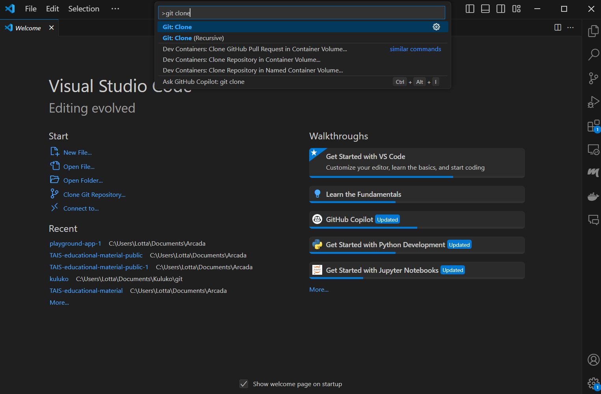

Preparing the Environment#
To run the examples provided in this material, you’ll need to set up a few tools and technologies on your machine. This involves downloading the necessary tools and configuring your system according to the requirements. Below is a list of essential tools needed to run the examples:
GitHub
Visual Studio Code or a similar IDE
Python, venv
Docker
All packages listed in the
requirements.txtfile in the project
Additionally, to use the playground app for deployment, there are further requirements that will be discussed in the deployment chapter.
GitHub will be used to clone the example code onto your local machine, where it can be tested and edited. To edit the code, you’ll need a code editor that also allows you to run and test the code locally. We recommend Visual Studio Code, but other similar IDEs can also be used. Follow the instructions below to install Git and Visual Studio Code and clone the examples to your local machine.
Installing Visual Studio Code and GitHub#
Step 1: Install Git#
Git is a version control system required to clone repositories from GitHub.
Download Git from the official website: https://git-scm.com/downloads
Install Git by following the installation instructions for your operating system.
Step 2: Install Visual Studio Code#
VS Code is a popular code editor that integrates well with Git.
Download VS Code from the official website: https://code.visualstudio.com/download
Install VS Code by following the installation instructions for your operating system.
Step 3: Set Up a GitHub Account#
If you don’t have a GitHub account, you need to create one.
Sign up for GitHub at github.com.
Create own repository from template repository#
When you want to create a new repository based on an existing template repository, GitHub makes it easy with its “Use this template” feature. This allows you to create a new repository that starts with the same files and structure as the template repository, enabling you to quickly kickstart your project.
Step 2: Create Your Own Repository from the Template#
Once you’re on the template repository page, look for the green button labeled “Use this template” near the top of the repository page.
Click on “Create new repository” and you will be redirected to a new page where you can create your own repository based on the template.
Step 3: Configure Your New Repository#
On the “Create a new repository” page, fill in the following details:
Include all branches: Leave this unchecked
Repository Name: Choose a name for your new repository.
Description: Optionally, provide a description of your repository.
Public/Private: Decide whether your repository should be public or private.
Once you’ve configured your new repository, click the “Create repository from template” button at the bottom of the page.
Your new repository will be created, containing all the files and structure from the template. You can now clone this repository to your local machine and start working on it.
Step 4: Clone the Repository and Open it in VS Code#
The example code can be found in the GitHub repository linked on this website. In the upper right-hand corner, there’s a GitHub icon. Click it to be redirected to the repository. This icon is available on all pages of the website, so you can easily revisit the repository whenever needed.
To copy the repository, click the icon to go to the repository. Once there, you’ll see a green button labeled “Code”. Click it, and a menu will pop up with cloning options. Choose the HTTPS option and copy the web address.
Using Git CLI:#
Open a terminal and navigate to the directory where you want to place the cloned repository.
Run the following command:
git clone <address of your repository>
Once cloned, you can right-click the folder and choose “Open with Code”.
Using Visual Studio Code GUI:#
Open VS Code.
Press
Ctrl+Shift+Por type>in the search bar to open the command palette.Start typing “Git: Clone” and select it when it appears.
Enter the web address into the command palette.
Choose a directory for the project and open the project.

Final Step: Review the Code#
Once the code is copied to your local machine and you can open the project in VS Code, browse through the folders. You may notice that the folders are named similarly to the chapters on the webpage. The example corresponding to a specific chapter will be located in the folder of the same name. We’ll explore the examples in detail in later chapters, so you don’t need to familiarize yourself with the code too much right now. However, it might be helpful to look at the next steps already at this point.
Python and venv#
The examples all use the Python language. If you haven’t used Python on your machine before, we recommend following these steps:
Step 1: Install Python#
Ensure that Python is installed on your system.
Download Python from the official website: https://www.python.org/downloads/
Install Python and ensure that the option to add Python to your PATH is selected during installation.
Step 2: Install Python Extension for VS Code#
To enhance your Python development experience in VS Code, install the Python extension.
Open VS Code.
Go to the Extensions view by clicking on the Extensions icon in the Activity Bar on the side of the window or pressing
Ctrl+Shift+X.Search for “Python” and install the extension provided by Microsoft.
Step 3: Set Up a Virtual Environment (Optional but Recommended)#
A virtual environment helps manage dependencies and avoid conflicts with other projects.
Open the terminal in VS Code (`Ctrl+``).
Navigate to the root of your project directory.
Create a virtual environment:
python -m venv .venv
Activate the environment:
Windows:
venv\Scripts\activateLinux/MacOS:
source venv/bin/activate
Step 4: Install Project Dependencies#
Since the project includes a
requirements.txtfile, use it to install dependencies.With the virtual environment activated, run:
pip install -r requirements.txt
Step 5: Configure the Python Interpreter in VS Code#
Ensure that VS Code uses the correct Python interpreter.
Open the Command Palette (
Ctrl+Shift+P).Type and select “Python: Select Interpreter”.
Choose the interpreter from your virtual environment (it should be listed).
Now you should be able to run the Python code!
Docker#
Further down the line, you will need Docker to test the examples. Docker is a platform that enables developers to automate the deployment of applications inside lightweight, portable, self-sufficient containers that can run virtually anywhere. To download Docker, visit the Docker Installation Page: https://docs.docker.com/get-docker/. Choose your operating system from the list (Windows, macOS, Linux) and follow the step-by-step instructions provided for your specific operating system. This typically involves downloading the Docker Desktop installer for Windows and macOS or using a package manager for Linux.
Once Docker is installed, you should be ready for the examples in the first five chapters. In the deployment chapter, we will provide further instructions on how to meet the specific requirements for the playground app.